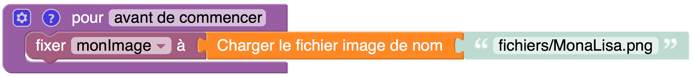

Catégorie : Images
Les blocs de cette catégorie permettent de charger une image et de la placer dans le canevas, ou encore de de glisser-déposer directement une image dans le canevas. Par la suite, on pourra appliquer diverses transformations à l'image du canevas en modifiant les pixels qui la constituent. Pour plus de détails sur la façon de procéder, voir l'exemple suivant.
Veuillez noter que les blocs de cette catégorie n'apparaissent pas automatiquement au lancement de l'éditeur p5Visuel. Pour les faire apparaître, activez l'item Montrez les blocs Images du menu AIDE - CONFIGURATION de l'éditeur p5Visuel. Vous pouvez aussi les faire apparaître au lancement de l'éditeur en ajoutant à l'adresse de l'éditeur le suffixe ?blocs=images.
Charger un fichier image
Paramètres
• une valeur nomImage (vide ci-dessus, mais qui peut
être un chemin d'accès quelconque)
Fonctionnement
• charge en mémoire l'image contenue dans le fichier spécifié
• l'image n'est pas placée sur notre page web : elle reste
invisible mais en mémoire
• le bloc retourne un objet image en mémoire, que l'on
doit placer dans une variable
Remarques
• les blocs successifs d'un programme p5Visuel sont
exécutés séquentiellement, mais on n'attend pas nécessairement
que l'exécution du bloc courant soit terminée avant de commencer
l'exécution du bloc suivant. C'est le cas, par exemple,
lorsqu'on accomplit une tâche comme charger une image.
• pour être certain que nos images sont bien chargées avant
d'amorcer la fonction actions initiales, on peut
commander
le chargement de toutes nos images dans une fonction spéciale
nommée avant de commencer : par exemple

Placer l'image dans le canevas
Paramètres
• une variable contenant un objet image en mémoire ou un objet zone graphique
• une valeur x (0 ci-dessus, mais qui peut être une
expression numérique quelconque)
• une valeur y (0 ci-dessus, mais qui peut être une
expression numérique quelconque)
• une valeur tailleOriginale pouvant être vrai
ou faux
Fonctionnement
• place une image en mémoire dans le canevas, le coin supérieur
gauche étant à la position spécifiée
• si tailleOriginale est faux, redimensionne
l'image pour qu'elle ait les dimensions du canevas
Remarques
• les coordonnées x et y sont relatives au
canevas : en particulier, (0,0) correspond au coin supérieur gauche
du canevas
Transfert des pixels du canevas dans PIXELS
Paramètres : aucun
Fonctionnement
• commande le transfert de la description de tous les pixels du
canevas dans une liste appelée pixels, en utilisant un
certain format
Remarques
•on pourra récupérer la liste en question via le bloc PIXELS
ci-dessous
PIXELS
Paramètres : aucun
Fonctionnement
• retourne la liste pixels (voir la description du bloc
précédent)
Remarques
• au départ, la liste pixels correspond aux pixels du
canevas. Mais elle peut être modifiée par la suite...
Lire dans une liste de pixels
Paramètres
• une variable listeDePixels, ayant la même structure
que la liste pixels (retournée par le bloc PIXELS)
• une valeur x (0 ci-dessus, mais qui peut être une
expression numérique quelconque)
• une valeur y (0 ci-dessus, mais qui peut être une
expression numérique quelconque)
• une valeur composante pouvant (un entier pouvant
varier de 0 à 3)
Fonctionnement
• voici le code de composante : 0 pour rouge, 1 pour
vert, 2 pour bleu, et 3 pour alpha (opacité-transparence)
• ce bloc retourne la composante spécifiée du pixel à la
position (x,y) de listeDePixels : un nombre
entre 0 et 255
Remarques
• les coordonnées x et y sont relatives au
canevas : en particulier, (0,0) correspond au coin supérieur gauche
du canevas
Écrire dans une liste de pixels
Paramètres
• une variable listeDePixels, ayant la même structure
que la liste pixels (retournée par le bloc PIXELS)
• une valeur x (0 ci-dessus, mais qui peut être une
expression numérique quelconque)
• une valeur y (0 ci-dessus, mais qui peut être une
expression numérique quelconque)
• une valeur composante pouvant (un entier pouvant
varier de 0 à 3)
• une valeur valeur pouvant (un entier pouvant varier de
0 à 255)
Fonctionnement
• voici le code de composante : 0 pour rouge, 1 pour
vert, 2 pour bleu, et 3 pour alpha (opacité-transparence)
• donne à la composante spécifiée du pixel à la position
(x,y) de listeDePixels la valeur
indiquée (un nombre entre 0 et 255)
Remarques
• les coordonnées x et y sont relatives au
canevas : en particulier, (0,0) correspond au coin supérieur gauche
du canevas
Transfert de PIXELS dans les pixels du canevas
Paramètres : aucun
Fonctionnement
• tous les pixels du canevas sont redéfinis à partir de la liste pixels
Si image déposée dans canevas
Paramètres
• une fonction à un paramètre (qui contiendra un objet image
en mémoire lors de l'appel subséquent) : par exemple
Fonctionnement
• indique quelle fonction appeler si une image est
glissée-déposée dans le canevas
Remarques
• pour plus de détails, voir l'exemple
suivant